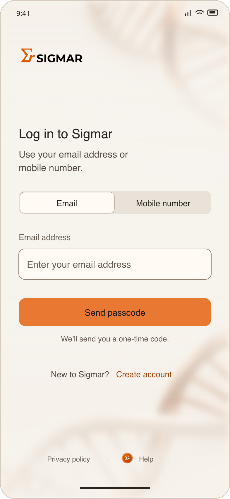

Login positioning review
First revised light iOS sample. Aligned 32-point gutters, a narrower form and more breathing room between steps. The full login/onboarding set now follows this spacing and restored DNA background.

Editable SVG · Design notes · Updated complete set